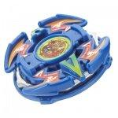

Dranzer V2
Note: Since this article was published, significant new and more accurate information has come to light, and as a result, this article must be updated. Please do not take all of the information here as the truth, as more extensive testing on the parts of this Beyblade has since provided information which conflicts with and/or expands upon the understanding of these parts this article was based upon. Updates will be posted on the main page when completed.
| Dranzer Volcano 2 | |
|  | |
| Number: | A-81 |
|---|---|
| System: | 5-Layer/Magnecore |
| Type: | Balance |
Contents
Takara/Hasbro Difference
The first Hasbro versions of this Beyblade had a faulty clutch, rendering the Blade Base both ineffective and awkward.
Attack Ring (AR): Cross Dranzer
- Weight: 6 grams
The AR of Dranzer V2 is completely symmetrical. It was designed in the shape of an oval with two wings in the shape of short right triangles and the letter 'V' incorporated between them on both sides of the AR. The two wings slope away from each other, and these slopes give the AR some Upper Attack. However, unlike the long slopes of Master Dragoon's AR, Upper Dragoon, Cross Dranzer's aforementioned slopes are quite short in comparison, decreasing it's ability to lift the opposing Beyblade as effectively.
Use in Upper Attack Combos
The short slopes on the wings of Dranzer V2's AR give it somewhat effective Upper Attack in both spin directions. Here is an example:
- AR: Cross Dranzer (Dranzer V2)
- WD: Wide Defense
- SG: Neo-Left SG/ Neo-Right SG
- SG Core: Heavy Metal Core Metal Driger
- BB: Storm Grip Base (Dragoon S)
This customization is useful for defeating both Survival and Balance type customizations. It destabilizes the opponent, causing them to floorscrape, which allows this combination to win by outspin.
Weight Disk (WD): 10 Balance
See Ten Balance
Spin Gear (SG): Neo Right SG (MW Core)
See Neo Right SG
Support Part (SP): Cross Survival
- Weight: 3 grams
Cross Survival is extremely circular, with four small knobs equally spaced across the rim. Its shape lends itself well to Spin Stealing, and is one of the top SP choices in Zombie combinations.
Use in Zombie Combinations
- AR: Twin Horn (Gabriel)
- WD: Wide Survivor
- SG: Left SG [Bearing Version] (Wolborg)
- SP: Cross Survival (Dranzer V2)
- BB: Customize Grip (Dragoon V2)
This is a common and effective Zombie combination, and can defeat most combos in the opposite spin direction. It is, however, easily defeated by Attack Types and Spiral Change Base (Dranzer S) based combos.
- Note refer to Adding a Different SG if you do not know how to setup the SG.
Blade Base (BB): Customize Clutch Base
- Weight: 6 grams
Customize Clutch Base has a tip changing gimmick that automatically enacts in battle. It has a sharp tip that is exposed when first launched, and that retracts when the RPM's meet an unspecified threshold. When the sharp tip retracts, the Beyblade leaves Survival Mode and enters Attack Mode, moving fairly quickly in a flower pattern. Every Customize Clutch Base is unique in when it's tip retracts, though one can manipulate the clutch through choice of Weight Disk and Spin Gear.
Use in Upgraded Dranzer V2 Combination
Customize Clutch Base can be manipulated to stay in Survival Mode longer through the use of 10 Heavy and the Heavy Metal Core (Metal Driger) to favorably alter the time of retraction of the sharp tip.
- AR: Cross Dranzer (Dranzer V2)
- WD: Ten Heavy
- SG: Neo-Right SG
- SG Core:* Heavy Metal Core Metal Driger
- SP: Cross Survival (Dranzer V2)
- BB: Customize Clutch Base (Dranzer V2)
The Heavy Metal Core and 10 Heavy give Dranzer V2 a higher spin velocity, allowing it to stay in survival mode for longer periods of time. This is beneficial because the Attack Mode is inneffective at it's job and absymal in endurance.
Other Versions
- Dranzer V2 - Fukubako Box 2003 Version (Red)
Gallery
Dranzer V2 - Original Version
-
Top view
-
3/4 view
-
Side view
-

Bottom view
-
Cross Dranzer Attack Ring
-

Ten Balance Weight Disk
-
Neo Right SG (Metal Weight)
-
Cross Survival Support Part
-
Customize Clutch Base
-
Sticker sheet
Overall
Dranzer V2 is a useful Beyblade, with a viable Attack Ring, vital Support Part, and curious Blade Base; Dranzer V2 is a deserved purchase for any blader, specifically Balance and Survival enthusiasts.